In China Employee Termination in 2026: A Role-Relay Governance Map for Foreign Employers Managing Legal and Payroll Risk
Key takeaways
- In China termination work, many high-cost errors happen at handoff points between teams, not within one team’s isolated task.
- Foreign employers need explicit role-relay ownership: who decides legal route, who validates evidence, who controls messaging, who finalizes payroll, and who owns archive closure.
- Legal/regulatory clarity should be the first relay stage; execution speed should be conditional on passing relay gates.
- Payroll is not only a processing function in this model; it is a consistency control point.
- A relay map improves cross-border governance by turning implicit assumptions into auditable ownership.
Legal and regulatory primer for non-local operators
Global teams often treat termination as a linear HR workflow. In China, a better frame is governance relay: each stage must receive and pass legally coherent information to the next stage without distortion. If one relay handoff is weak, downstream outputs can conflict and create avoidable dispute risk.
The legal backbone remains consistent. The Labor Contract Law sets route and consequence logic. The State Council implementation regulation provides operational interpretation. Supreme People’s Court labor dispute interpretation highlights why evidence and consistency quality are critical under challenge. The Social Insurance Law anchors statutory closure duties linked to offboarding. China Briefing offers practical translation for multinational employers, helping teams apply formal rules in operational settings.
For foreign readers new to local practice, the core message is: termination should be governed as a cross-function legal-risk relay, not as isolated departmental execution.
Why handoff failures are the real risk engine
In many multinational cases, legal teams may produce a defensible route assessment, HR may draft clear communications, and payroll may process components accurately—yet the final case still becomes fragile. Why? Because artifacts are created in parallel and assumptions diverge across teams. A slight mismatch in route language, timing narrative, or payment labeling can undermine overall coherence.
Cross-border structures intensify this risk. Headquarters, regional HR, local HR, and outsourced providers may all touch the same case with different priorities. Without an explicit relay map, ownership becomes blurred and “everyone thought someone else confirmed that” becomes common.
A role-relay model solves this by defining stage ownership, handoff criteria, and stop/go triggers. It is less about adding bureaucracy and more about reducing ambiguity.
Role-relay governance map
Relay 1: Legal route definition (Legal + HR)
Purpose: classify the case route and document confidence boundaries.
Handoff criteria:
- One clear route label accepted by legal and HR.
- Rationale note with known assumptions and unresolved questions.
- Explicit statement of what would invalidate current route confidence.
Relay 2: Evidence integrity (HR + Manager)
Purpose: confirm that asserted facts are supported by retrievable records.
Handoff criteria:
- Evidence map linking key assertions to records.
- Gap log for unresolved items with owner/action.
- Decision on whether gaps are tolerable or blocking.
Relay 3: Communication coherence (HR + Legal + Manager)
Purpose: align employee-facing narrative with approved route and facts.
Handoff criteria:
- Final communication pack version-controlled.
- Language consistency check against route rationale.
- Approval record showing no unresolved narrative conflicts.
Relay 4: Payroll and statutory alignment (Payroll + HR + Legal)
Purpose: ensure output labels and treatment align with approved case rationale.
Handoff criteria:
- Payroll rationale sheet mapped to approved route.
- Statutory closure checks completed or flagged.
- Escalation record for any treatment ambiguity.
Relay 5: Archive and closure governance (HR + Vendor/EOR)
Purpose: complete retrievable file and assign durable ownership.
Handoff criteria:
- Indexed archive with all core artifacts.
- Retrieval owner and retention location documented.
- Vendor handoff completeness confirmed where relevant.
This relay model gives foreign operators a repeatable structure for quality control and dispute readiness.
Relay risk table (quick governance view)
| Relay stage | Primary risk if weak | Early warning signal | Governance response |
|---|---|---|---|
| Route definition | Misclassification | Teams use different route language | Freeze downstream work, reconcile route memo |
| Evidence integrity | Unsupported assertions | “Facts are clear” but records unclear | Build evidence map and block unresolved critical gaps |
| Communication coherence | Narrative contradiction | Drafts diverge from legal rationale | Reconcile artifact set before release |
| Payroll/statutory alignment | Output inconsistency | Labels/treatment mismatch route logic | Hold final run until alignment pass |
| Archive closure | Weak dispute readiness | Files scattered across teams/vendors | Index and assign ownership before closure |
This table helps leadership see where risk accumulates before it appears as a dispute.
Applied scenario 1: manager urgency breaks relay sequencing
A foreign business unit leader requests immediate termination due to persistent team disruption. HR starts communication drafting while legal route review is still open. Payroll receives early inputs to prepare final components.
Relay diagnosis: Relay 1 and Relay 2 are incomplete, yet Relay 3 and Relay 4 began. This sequence creates contradiction risk.
Recovery path:
- Pause outbound communication and payroll finalization.
- Complete route memo and evidence map first.
- Reopen communication/payroll only after route confidence is documented.
Lesson: relay order is not procedural formality; it is risk containment.
Applied scenario 2: restructuring portfolio overwhelms ownership clarity
During a regional reduction program, dozens of files move simultaneously. Vendor support is added for speed. Local team assumes vendor owns archive closure; vendor assumes internal team owns final indexing.
Relay diagnosis: Relay 5 ownership failure with potential impact on earlier relay integrity.
Recovery path:
- Publish a single ownership matrix for all open files.
- Require closure index before case completion status.
- Escalate unresolved owner conflicts to governance lead.
Lesson: high-volume periods require tighter relay ownership, not looser assumptions.
Secondary operations section (kept secondary to relay logic)
Legal SOP
- Approve route classification and confidence boundaries.
- Define critical evidence threshold and uncertainty triggers.
- Sign off on high-risk escalations.
HR SOP
- Orchestrate relay sequencing and track stage status.
- Maintain version control for communications.
- Own final archive index completion.
Manager SOP
- Provide factual chronology and source records.
- Avoid premature legal conclusions in communication.
- Escalate urgency conflicts via relay governance path.
Payroll SOP
- Keep outputs provisional until Relay 4 criteria pass.
- Validate label/treatment consistency with route rationale.
- Trigger stop if mismatch appears.
Vendor/EOR SOP
- Execute assigned work with explicit boundaries.
- Preserve artifact transfer logs.
- Confirm closure responsibilities in writing.
This SOP layer operationalizes the relay map without replacing legal-first logic.
Exception routing and recovery rules
Exception A: route changes mid-flow
- Roll back to Relay 1.
- Revalidate Relay 2–4 artifacts against updated route.
- Reissue approved final bundle.
Exception B: evidence gap discovered after communication draft
- Roll back to Relay 2.
- Reassess whether communication language remains valid.
- Reapprove before release.
Exception C: payroll mapping conflicts with legal memo
- Hold Relay 4 completion.
- Reconcile rationale and remap outputs.
- Document approval changes.
Exception D: local uncertainty appears late
- Add uncertainty log and local-confirmation request.
- Require explicit risk acknowledgment before proceeding.
Exception E: archive owner disputed
- Stop closure status.
- Assign single accountable owner and update index.
These rules prevent pressure from bypassing governance integrity.
System controls and audit trail recommendations
High-value controls can be lightweight:
- Relay stage field in case tracker with owner and status.
- Mandatory handoff criteria checklist per relay stage.
- Blockers register with due date and accountable owner.
- Pre-release lock that prevents payroll finalization before Relay 4 pass.
- Archive closure gate requiring index completion.
Audit log quality matters. Capture who approved each relay transition, when, and against which artifact version. This creates practical traceability for internal review and dispute response.
Role-relay maturity model for foreign employers
A practical way to improve governance over time is to define maturity levels instead of expecting perfect execution immediately. At Level 1, teams have basic role labels but no formal handoff criteria; cases depend heavily on individual judgment. At Level 2, organizations introduce relay-stage checklists and clear owners, but escalation behavior remains inconsistent under pressure. At Level 3, route, evidence, communication, and payroll alignment gates are embedded in systems and routinely audited. At Level 4, governance becomes predictive: teams monitor near-miss patterns, adjust control intensity by case risk, and feed outcomes back into training and policy refresh.
For multinational operators, this maturity framing helps leadership set realistic implementation goals. Instead of asking whether the organization is “compliant or not,” boards can track concrete progress: fewer relay bypasses, faster blocker resolution, cleaner closure files, and improved cross-function consistency. That produces better decision quality without turning governance into a documentation exercise. The key is steady institutionalization: each cycle should convert one recurring failure pattern into a standardized control.
Common mistakes and prevention
Mistake 1: parallel execution without relay order
Prevention: enforce stage sequencing in tracker and governance reviews.
Mistake 2: treating route labels as interchangeable language
Prevention: require one approved route definition per case.
Mistake 3: underweighting payroll consistency risk
Prevention: include payroll as formal relay gate owner.
Mistake 4: assuming vendor ownership by default
Prevention: explicitly assign closure and archive accountability.
Mistake 5: closing cases without retrieval integrity
Prevention: make indexed archive a hard close requirement.
What to do now
- Publish a role-relay governance map for all China termination cases.
- Configure case tracker with five relay stages and owners.
- Add mandatory handoff criteria and stop/go rules per stage.
- Require three-way coherence checks before payroll finalization.
- Add uncertainty logging and local-confirmation escalation.
- Standardize closure indexing and ownership documentation.
- Review recent cases for relay-stage bypass patterns.
- Update governance training for managers and regional leads.
This sequence raises control quality without excessive process overhead.
What to watch next
Foreign employers should monitor local adjudication trends affecting evidence expectations, internal pressure cycles that encourage relay bypass, and ownership drift in vendor-supported workflows. Relay governance should be reviewed periodically against real case outcomes.
Source-fit reassessment for this run
This run rotates from cost-risk matrix to role-relay governance format while keeping source quality stable and high-confidence. Official legal and judicial sources remain the factual foundation; China Briefing remains the practical multinational translation layer. Lower-fit tax-heavy or broad comparative materials were not prioritized because the focus is handoff control integrity, not tax-detail execution.
FAQ
1) Why use a role-relay model instead of a simple process map?
A relay model highlights ownership and handoff quality, where many real failures occur.
2) Does relay governance slow execution?
It slows ambiguous cases but usually accelerates clean cases by reducing rework.
3) Where should payroll enter the governance flow?
Payroll should be a formal gate owner before final release, not an end-stage processor only.
4) Can this model work with EOR-supported operations?
Yes, if ownership boundaries and artifact transfer controls are explicit.
5) Is this article legal advice for specific disputes?
No. It is informational and should be supplemented by qualified local professional advice.
6) What is the most common relay failure?
Cross-team narrative mismatch caused by starting downstream execution before route/evidence stages are complete.
Disclaimer
This article is for informational purposes only and does not constitute legal, tax, accounting, or compliance advice. China employment outcomes depend on case facts and local implementation practice. Employers should seek qualified local professional advice before making case-level decisions.
Sources
- National People’s Congress. Labor Contract Law of the People’s Republic of China (official English text; adopted 2007-06-29, amended 2012-12-28). http://www.npc.gov.cn/zgrdw/englishnpc/Law/2007-12/13/content_1384064.htm (accessed 2026-02-27).
- State Council. Regulations for the Implementation of the Labor Contract Law of the PRC (State Council Decree No. 535; official publication). https://www.gov.cn/gongbao/content/2008/content_1124615.htm (accessed 2026-02-27).
- Supreme People’s Court. Interpretation on Issues Concerning the Application of Law in the Trial of Labor Dispute Cases (I) (2020 amendment). https://www.court.gov.cn/fabu/xiangqing/243981.html (accessed 2026-02-27).
- National People’s Congress. Social Insurance Law of the People’s Republic of China (official English text; adopted 2010-10-28). http://www.npc.gov.cn/zgrdw/englishnpc/Law/2009-02/20/content_1471106.htm (accessed 2026-02-27).
- Dezan Shira & Associates (China Briefing). Employee Termination in China: A Guide for Employers (updated 2025). https://www.china-briefing.com/news/employee-termination-in-china/ (accessed 2026-02-27).
China-Payroll.com supports foreign employers with compliance-first EOR and payroll operations in China.
Need local employment support in China?
If you need a compliance-first partner for hiring, payroll, and risk controls in China, China-Payroll.com can help evaluate the right setup.
Image Prompt Pack
Create a 16:9 hero image for article title: 'In China Employee Termination in 2026: A Role-Relay Governance Map for Foreign Employers Managing Legal and Payroll Risk'. Scene: global operations team evaluating workforce model options for China market entry. Inc…